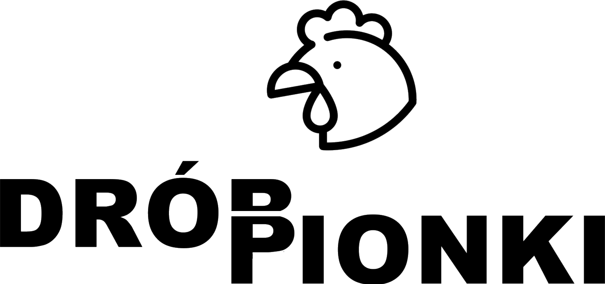
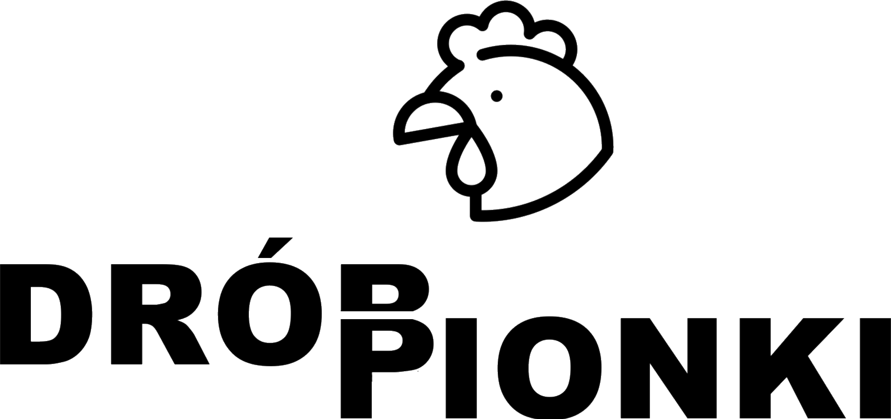

Świeży drób
Drób Pionki juz od ponad 85 lat poprzez nowoczesne techniki hodowli, karmienie najlepszą paszą i fermy z wolnym wybiegem oferuje najlepszej jakości i najświeższy drób.


 

"Świeże kurczaki z Drób Pionki to podstawa każdego obiadu"
O nas
Drób Pionki to firma z siedzibą w Pionkach, powiat Radomski, zajmująca się hodowlą i produkcją drobiu już od ponad 85 lat. Założona przez Bronisława Kupijaja 14 kwietnia 1937 roku w Pionkach, zasłynęła z niezwykłej jakości swoich produktów. Biznes od zawsze utrzymywany był w rodzinnych tradycjach i naturalnych warunkach. Dzisiaj prezesem firmy jest Tomasz Kupijaj, wnuk założyciela firmy. Dzięki ciągłemu rozwojowi i inwestycjom w nowe technologie, jesteśmy w stanie dostarczać naszym klientom produkty najwyższej jakości, spełniające najwyższe standardy bezpieczeństwa i higieny. Naszym priorytetem jest zadowolenie klientów oraz zapewnienie zdrowych i smacznych produktów drobiowych.
Kurczaki
Indyki
Gęsi
Nasza oferta
Mimo, że słyniemy z naszych kurczaków, w Drób Pionki sprzedajemy także inny drób - indyki i gęsi.
Najlepszej jakości - w najlepszej cenie
Zamów u nas

Zamów u nas
"O najwyższej jakości i w najniższej cenie"
Nasza jakość
Wolny wybieg
Wolny wybieg dla drobiu w firmie Drób Pionki pozwala kurczakom na naturalne zachowania. Dzięki temu, że kurczaki mają więcej miejsca i swobody, są mniej zestresowane, co wpływa pozytywnie na ich zdrowie i kondycję. Zdrowe i szczęśliwe kurczaki mają lepszą odporność i mniej chorują, co przekłada się na lepszą jakość mięsa.
Najwyższych jakości pasze
W Drób Pionki używamy jedynie naturalnych i bez szkodliwych substancji pasz, od pewnych firm takich jak Paszex Poland® które zapewniają naszym kurczakom zdrowie, i odopwiedni rozwój, aby potem jak najlepsze trafiły na twój talerz.
Zadowoleni pracownicy
Dobra atmosfera w miejscu pracy, odpowiednie warunki pracy i szkolenia podnoszą morale pracowników, co przekłada się na ich zaangażowanie i wydajność. Zadowoleni pracownicy są bardziej skłonni do dokładności i dbałości o jakość pracy, co przekłada się na jakość produktu końcowego.

Współpraca z Rzeźnia Pionki®
Wieloletnia współpraca z lokalną firmą Rzeźnia Pionki® zapewnia nam najlepszy przetwór mięsa. Ich nowoczesne metody obróbki drobiu pozwalają na najlepsze i największe porcje kurczaków w twoim obiedzie.